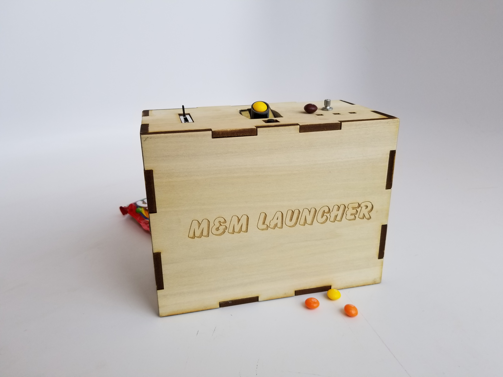
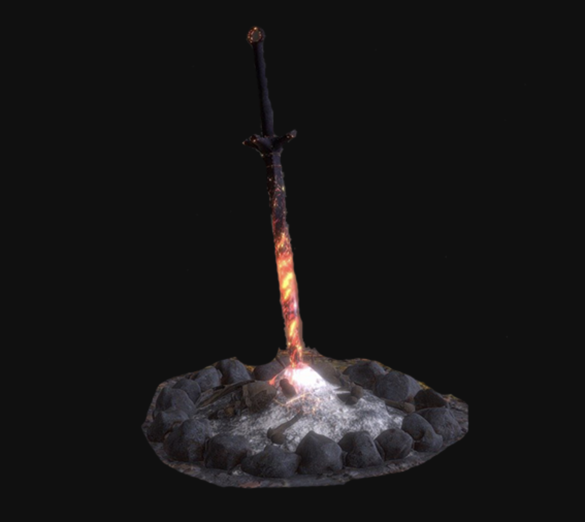
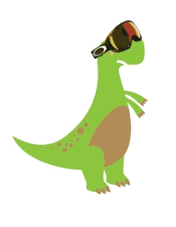

Software Development Projects
(images/gifs link to projects)
Discord Bot

Private Discord bot programmed in Python that performs misc. tasks. The bot uses the Python Discord library and the asyncio library to monitor discord servers and respond to certain keywords. When making new features for the bot I usually try do something new programming wise, for example some functions use File I/O, some use Regex, if/elif trees, variable dictionaries, and many more. Clicking on the image will link you to the Git Hub repository for this bot.
A Space Bear Adventure
This was the final project made by my team in game design. It is worth noting that this is the same team that was able to sell the rights to a board game we created the year prior. We continued to use our agile development methods in this class and produced an amazing game. I did a lot of work on the controller intergation as well a lot of the designing and level building. The game is built in Unity using C#
Arduino Projects
Wordpress blog documenting my various Arduino projects. Most of the code is written by me including the code for the M&M Launcher which has been my largest Arduino project to date. Clicking on the image of the M&M launcher will bring you to my work-in-progress blog where you can find my process on all of my Arduino and some of my front end web development projects.
Connect 4
Connect 4 game built in React using the UseState hook. This project is definetly one of my greater programming achievments due to the amount of logic the game required to be coded in. It was great practice for learning the rules of state within the react framework.
Discover M(you)sic (senior capstone)
Discover M(you)sic is the project that I created for my senior capstone class. The basis of the project is to provide users with music recommendations pulled from the Last.FM and Youtube API's. The project turned out alright despite the difficulties caused by the Corona virus outbreak.
Pico 8 - Ice Puzzles
Final Project for a game design class coded in Pico-8 which is a lua based language. The game features a penguin sliding through various ice puzzles.
One Shot (Current WIP)
This is the current project I am working on with a group of friends. So far I have done the bulk of the UI work but the website is still in it's early stages, we are currently holding weekly meetings while using agile development methods. As for the content of the websites we are hoping to create an online dungeons and dragons like experience featuring prebuilt stories written by our team. Ideally it should be something a group of friends could play over the internet for a few hours while hanging out in internet chat rooms.
Dark Souls Fan Wiki
Image link to my interactive Dark Souls fan page, This was one of my earlier creations in my software devolopment career. And while it may lack polish, it is a simple creative work that shows a little bit of my design philosophy. The page itself is meant to work as a wiki of sorts and was mostly created to practice linking between many webpages. I put a lot of care into the structuring of this website to make the navigation feel almost similar to the way it is in the game. Though it's just simple html and css it's one of my favorite projects.
Matching Game
This is a group project created in react, we decided to build a matching game, we also incorporated the use of the lodash library which gives a bunch of useful commands and the UseState hook which makes the management of state much easier
Javascript Clock
Stylized clock I created using vanilla javascript, it features a real time clock, progress bars for both the year and month as well as an insperational or funny quote for each day.
GitHub Group Practice
This project was used as practice for working on a Github project with multiple contributers in order to get experience with merging, avoiding, and resolving merge conflicts.
Bash Terminal Practice

Our first assignment for this class had us create the website above using nothing but the bash shell. This mean using NANO to write it and using bash commands to upload it to the schools server.
Parralax Gaming History
This project is a demonstration of parralax scrolling with the use of SASS for css and Gulp for compiling our SASS code. The page is also equipped with Google Analytics.
Event Listener Practice
Midterm that focused on a variety of Javascript functions mostly revolving around event listeners, coded in less than an hour
Firebase & Forms Practice
Final Exam that tested our skills with firebase and API usage, the firebase functionalities are working and can be seen by clicking on the image, unfortunately the API no longer works due to changes in CU's servers security.
HTML Forms Practice
simple HTML forms project, also my intro to Jquery
Dom Manipulation
Simple Jquery Dom Manipulation exercise featuring animation
React To-Do List
Above is a simple to do list created in React.
Flexbox Practice
Website I created that displays various flexbox layouts that can be switched by clicking links 1-3
Pico 8 - Tiny Games
Bitsy - Tiny Games
Two games that I created using the bitsy game maker tool, the game you can play by clicking on the knife also features some custom hacks that allowed me to do things like create moveable objects, as well as coding in multiple endings.
Unity SHMUP
I coded a small shoot em up style game in Unity featuring a Manatee who can shoot bubbles from his mouth in order to destroy trash in the ocean.